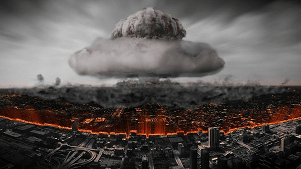
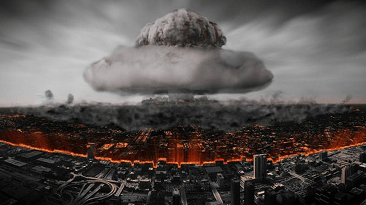

《奥本海默》是克里斯托弗·诺兰自编自导的传记电影，由基里安·墨菲主演，于2023年7月21日在北美上映 ，8月30日在中国内地上映。
该片改编自Kai Bird、Martin J. Sherwin所著书籍《美国普罗米修斯：奥本海默的胜与悲》 ，讲述了美国“原子弹之父”罗伯特·奥本海默在“二战期间”领导研制原子弹的过程，以及他在二战结束后遭遇不公正听证会的故事 。

-
 罗伯特·奥本海默演员 基里安·墨菲
罗伯特·奥本海默演员 基里安·墨菲美国理论物理学家，“曼哈顿计划”的科学主管，主导研制了世界上第一颗原子弹。他聪慧过人，讨厌虚伪和愚蠢，不擅交际，更不懂得自己的所作所为可能引发的政治风险。他曾饱受精神疾病困扰，晚年又深陷研制出核武器引发世界安全危机的担忧中无法自拔。面对听证会上的各种攻击和不利证词，他不但没有立刻反驳，反而迷茫无助。
-
刘易斯·斯特劳斯演员 小罗伯特·唐尼
美国原子能委员会主席。在政商两界游走自如，阴险、圆滑、心胸狭窄，善于用政治程序以达到个人目标。因为奥本海默无意间调侃他曾经是低微的鞋贩，以及怀疑奥本海默在爱因斯坦前说他“坏话”，就将个人私怨演化成对奥本海默的政治报复，通过精心策划的听证会公报私仇，借刀杀人。最终他为迫害奥本海默的阴谋付出了代价。
-
莱斯利·理查德·格罗夫斯演员 马特·达蒙
美国陆军中将，“曼哈顿计划”的军方主管，脚踏实地、雷厉风行、善于管理。在接手“曼哈顿计划”时，虽然奥本海默并非条件最理想的人选，但他认为这个思想有问题的家伙最适合成为项目的科学主管。他与奥本海默性格迥异，甚至有过冲突，但总能携手并进，互相支持。